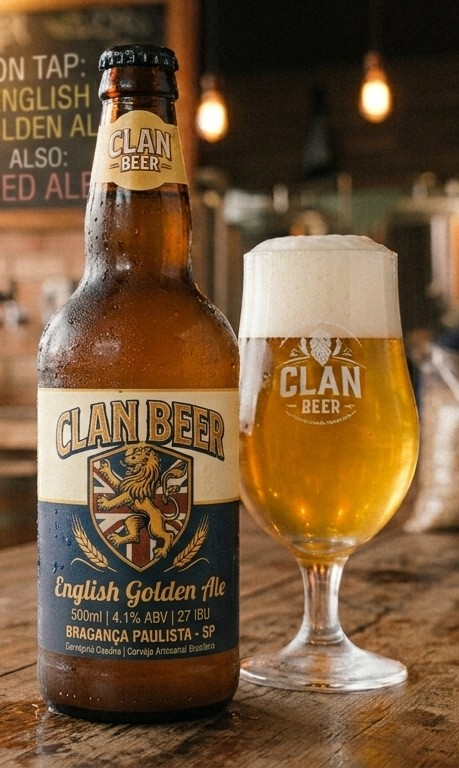
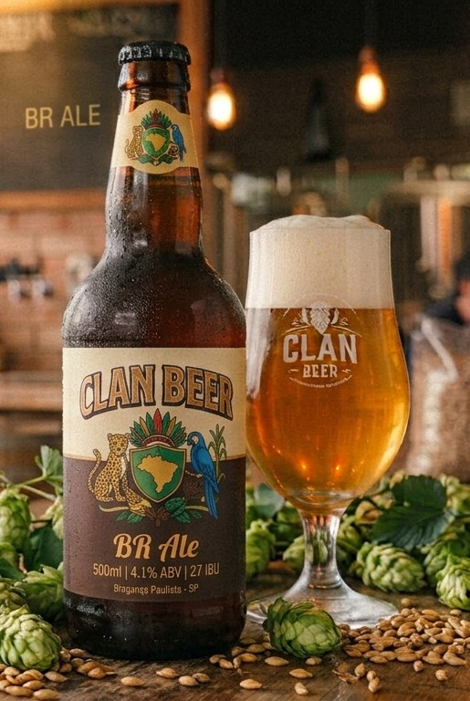
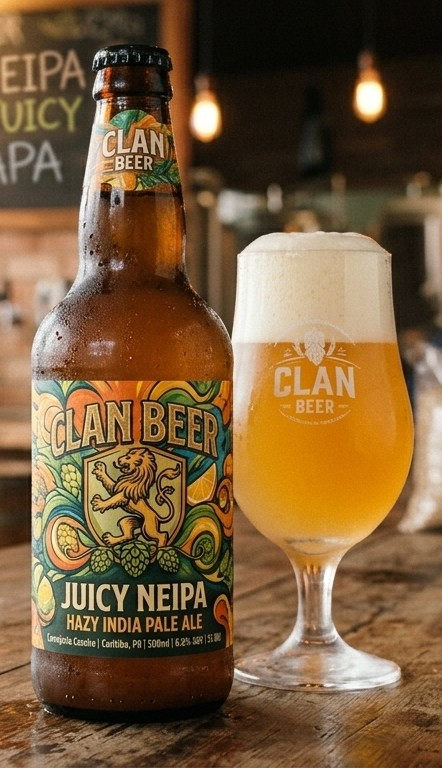
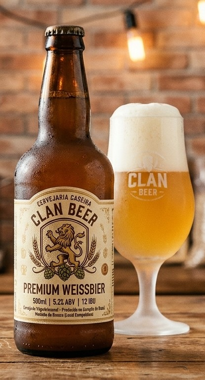
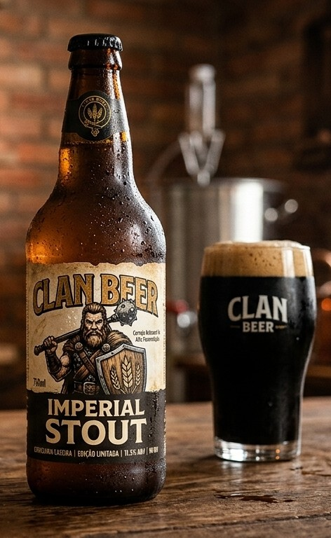

Nossos Rótulos

Golden Ale
A British Golden Ale (ou English Golden Ale) é uma cerveja clara, refrescante e muito focada no lúpulo, criada na Inglaterra em 1986 para concorrer diretamente com as cervejas tipo Lager.
ABV: 4.1% | IBU: 27

BR Ale
A BR-ALE (Brazilian Ale) é um estilo de cerveja artesanal criado no Brasil por cervejeiros caseiros para ser uma evolução tropical e refrescante da tradicional Cream Ale.
ABV: 4.2% | IBU: 31

NEIPA
Amargor marcante, aroma cítrico e notas frutadas fortes.
ABV: 6.5% | IBU: 55

Weissbier
Refrescante, de trigo com aroma tradicional de banana e cravo.
ABV: 5.0% | IBU: 12

Imperial Stout
Escura e encorpada, com notas intensas de café e cacau.
ABV: 8.2% | IBU: 60